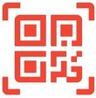
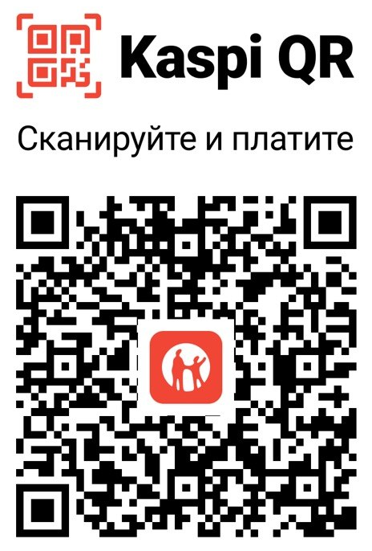

Destek ol Pody Lab
Pody Lab uygulamaları ücretsiz. İşine yararsa istediğin tutarı gönder. Para yeni özelliklere ve sonraki uygulamalara gider.

Kaspi QR
Kazakistan için

- Kaspi.kz uygulamasını aç.
- «Kaspi QR»a dokun ve kamerayı koda tut.
- Bir tutar yaz ve onayla.
Kriptoyla
USDT, TON, BTC, ETH, BNB, DOGE
Uygulamaları birlikte geliştirelim
Bunun için ödeme gerekmez. PoDee ya da PoDoo’da neyin eksik olduğunu veya sıradaki uygulamanın ne olması gerektiğini anlat. Her dileği okuyoruz.
Bağışla birlikte bir dilek de gönderebilirsin: kart ödemesinin mesajında ya da TON transferinin açıklamasında.